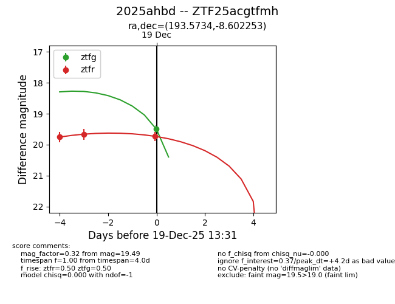
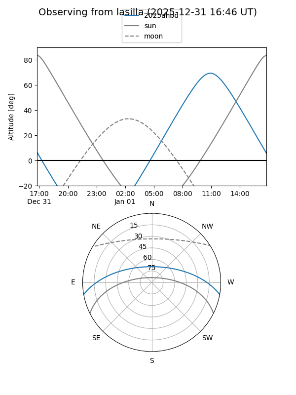
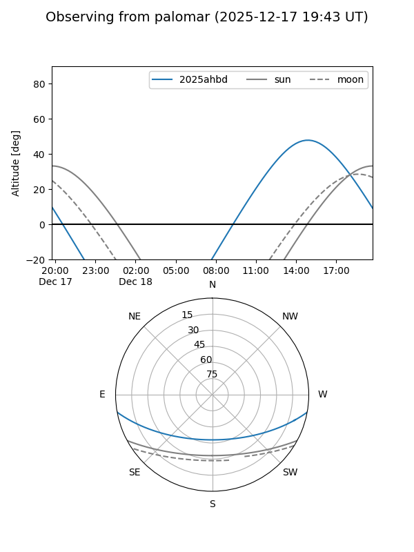
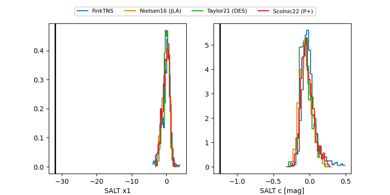

2025ahbd
Target 2025ahbd at 2025-12-19 12:33
Aliases and brokers:
FINK: fink-portal.org/ZTF25acgtfmh
Lasair: lasair-ztf.lsst.ac.uk/objects/ZTF25acgtfmh
ALeRCE: alerce.online/object/ZTF25acgtfmh
TNS: wis-tns.org/object/2025ahbd
YSE: ziggy.ucolick.org/yse/transient_detail/2025ahbd
alt names
ZTF25acgtfmh (ztf,fink_ztf)
2025ahbd (tns,yse)
Coordinates:
equatorial (ra, dec) = 193.5734,-8.60225
equatorial (HMS+DMS) = 12:54:17.62,-08:36:08.11
galactic (l, b) = (304.1406,+54.26279)
Flags:
Photometry:
last ztfr=19.73
3 ztfr detections
Lightcurve

Visibility


Additional plots
